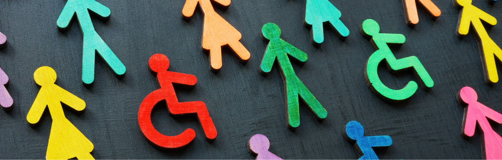

Stell dir vor, du betrittst eine Kita, in der alle Kinder gemeinsam spielen, lernen und lachen – unabhängig von ihren individuellen Fähigkeiten oder Hintergründen. Klingt wunderbar, oder? Genau das bedeutet Inklusion! Doch wie schaffen wir es, eine Kita zu gestalten, in der sich wirklich jedes Kind willkommen und wertgeschätzt fühlt?
einen besonderen Förderbedarf
gesetzlich in der Kita
weltweiter Meilenstein
Integration vs. Inklusion: Was ist der Unterschied?
Die Begriffe werden oft verwechselt — dabei ist der Unterschied entscheidend für die pädagogische Haltung:
| Merkmal | Integration | Inklusion |
|---|---|---|
| Grundansatz | Kind muss sich anpassen | System passt sich an das Kind an |
| Voraussetzung | Diagnose / Förderstatus nötig | Alle Kinder von Anfang an dabei |
| Ziel | Eingliederung in die Gruppe | Gleichberechtigte Teilhabe |
| Barrierefreiheit | Optional, bei Bedarf | Grundvoraussetzung |
| Haltung | „Das Kind ist anders" | „Vielfalt ist der Normalfall" |
1. Inklusion beginnt im Kopf
Inklusion ist keine Checkliste, die wir abhaken, sondern eine Haltung, die wir leben. Das bedeutet: Jedes Kind ist von Anfang an Teil der Gemeinschaft – nicht erst, wenn es sich „angepasst" hat.
Haltung zeigen
Jedes Kind ist einzigartig und hat das Recht auf Teilhabe — ohne Wenn und Aber.
Barrieren abbauen
Physische, kommunikative oder soziale Hindernisse erkennen und aktiv beseitigen.
Individualität stärken
Nicht jedes Kind braucht das Gleiche — aber jedes Kind braucht das, was es stärkt!
2. Alltagstaugliche Inklusion – So gelingt's!
Vielfalt beginnt nicht erst beim Laternenfest, sondern im täglichen Miteinander. Hier sind konkrete Ideen für einen inklusiven Kita-Alltag:
Inklusiver Morgenkreis: Statt „Wer kann schon bis zehn zählen?" lieber „Jeder zeigt, was er kann" – durch Singen, Klatschen oder Gebärdensprache.
Materialien, die Vielfalt zeigen: Bilderbücher, Puppen und Spiele sollten verschiedene Kulturen, Behinderungen und Familienformen repräsentieren.
Rollenspiele und Theater: Kinder lernen durch Nachahmung — warum nicht gemeinsam Geschichten entwickeln, die Vielfalt spielerisch aufgreifen?

Teamwork macht den Kita-Traum wahr
Kein Kind lebt Inklusion allein – und auch kein/e Erzieher*in! Ein starkes Kita-Team ist der Schlüssel:
- Regelmäßige Reflexion: Wie inklusiv sind wir wirklich? Welche Herausforderungen begegnen uns?
- Offene Kommunikation: Schafft ein Umfeld, in dem alle Teammitglieder ihre Gedanken teilen können.
- Weiterbildungen nutzen: Wissen macht den Kita-Alltag für alle einfacher und schöner!
3. Herausforderungen? Nehmt sie mit Humor!
Inklusion klingt großartig – aber natürlich gibt es Momente, die herausfordernd sind:
Kind mit Autismus empfindet den Morgenkreis als zu laut? Vielleicht hilft ein ruhiger Rückzugsort — eine kleine Veränderung mit großer Wirkung.
Eltern haben Vorbehalte gegenüber Inklusion? Geduld und Aufklärung sind hier der Schlüssel — und viele gute Beispiele aus eurem Alltag.
Zu wenig Zeit im Team? Kleine Schritte führen auch ans Ziel — Inklusion muss nicht alles auf einmal bedeuten.
Kein Budget für extra Material? Kreativität schlägt Budget — viele inklusive Ideen kosten nichts außer einer offenen Haltung.
4. Fazit: Vielfalt feiern statt verwalten!
Wenn wir Vielfalt nicht als Herausforderung, sondern als Chance begreifen, profitieren alle: Kinder, Eltern und Erzieher*innen. Lasst uns gemeinsam eine Kita gestalten, in der sich wirklich jedes Kind zu Hause fühlt!